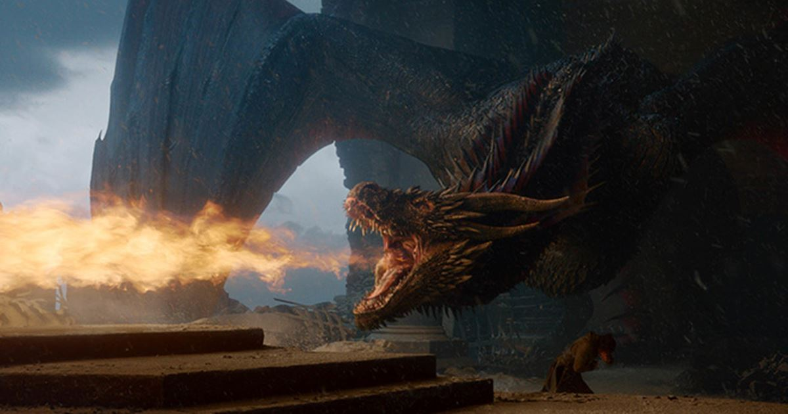

Il Trono di Spade (Game of Thrones) è una serie televisiva statunitense di genere fantastico creata da David Benioff e D.B. Weiss, trasmessa dal 17 aprile 2011 al 19 maggio 2019 sul canale HBO per otto stagioni e 73 episodi totali. È nata come adattamento televisivo del ciclo di romanzi Cronache del ghiaccio e del fuoco di George R. R. Martin, finendo poi per essere scritta contemporaneamente ai libri dell'autore.
La serie racconta le avventure di molti personaggi ed è ambientata in un grande mondo immaginario costituito principalmente dal continente Occidentale (Westeros) e da quello Orientale (Essos). Il centro più grande e civilizzato del continente Occidentale è la città capitale Approdo del Re, dove si trova il Trono di Spade dei Sette Regni. La lotta per la conquista del trono porta le più potenti e nobili famiglie del continente a scontrarsi o allearsi tra loro in un contorto gioco di potere, che coinvolge anche l'ultima discendente della dinastia regnante deposta. Gli intrighi politici, economici e religiosi dei nobili lasciano la popolazione nella povertà e nel degrado, mentre il mondo viene minacciato dall'arrivo di un inverno diverso dai precedenti, che risveglia creature leggendarie dimenticate e fa emergere forze oscure e magiche.
href="https://fantaviseman.github.io/drogon.html">DRACARYS!
le nostre impressioni